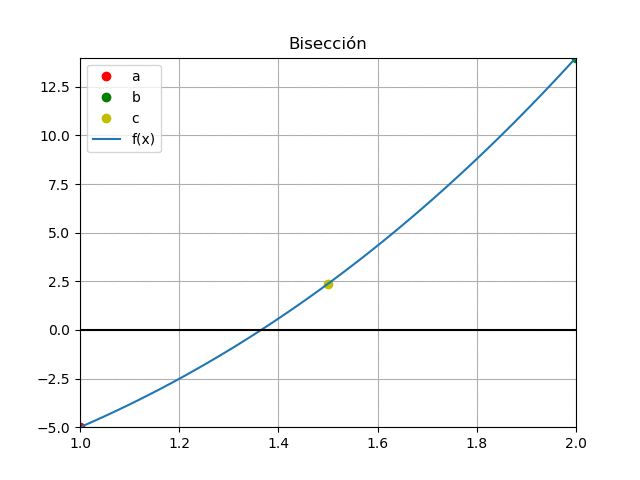
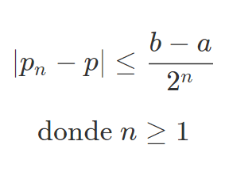
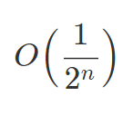
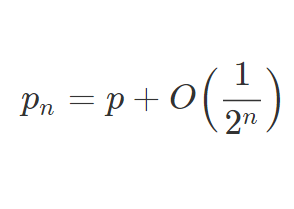

Métodos de Bisección o de Bolzano
El método se basa en el teorema del valor intermedio, conocido como método de la bisección, búsqueda binaria, partición de intervalos o de Bolzano.
Es un tipo de búsqueda incremental en el que:
- El intervalo se divide siempre en la mitad
- Si la función cambia de signo sobre un intervalo, se evalúa el valor de la función en el punto medio
- La posición de la raíz se determina en el punto medio del sub-intervalo, izquierdo o derecho, dentro del cual ocurre un cambio de signo
- El proceso se repite hasta obtener una mejor aproximación
- La gráfica muestra el proceso en forma animada, observe la forma en que progresivamente se acercan los puntos [a,b], donde se mantienen valores con signo diferente entre f(a) y f(b).
- Observamos la gráfica para una sola iteración y asi describir mejor el método. Para la primera iteración se tiene como procedimiento que la función tiene un cambio de signo en el intervalo [a,b].
- En intervalo se divide en la mitad, representado por el punto c, obteniendo el sub-intervalo izquierdo [a,c] o sub-intervalo derecho [c,b].
- El sub-intervalo que contiene la función con un cambio de signo, se convierte en el nuevo intervalo a ser analizado en la siguiente iteración

Cota de error
Suponga que f ∈ C[a,b] y f(a)*f(b)<0, f es una función en el intervalo [a,b] y que presenta un cambio de signo

la desigualdad implica que Pn converge a p con una razón de convergencia de orden:

es decir:
